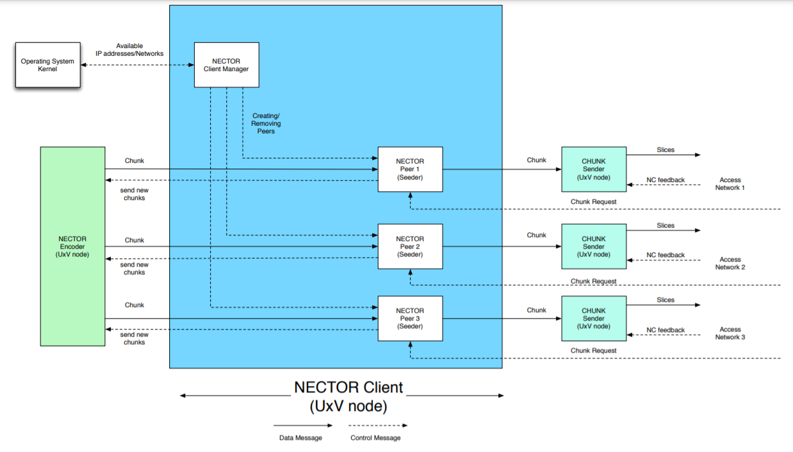
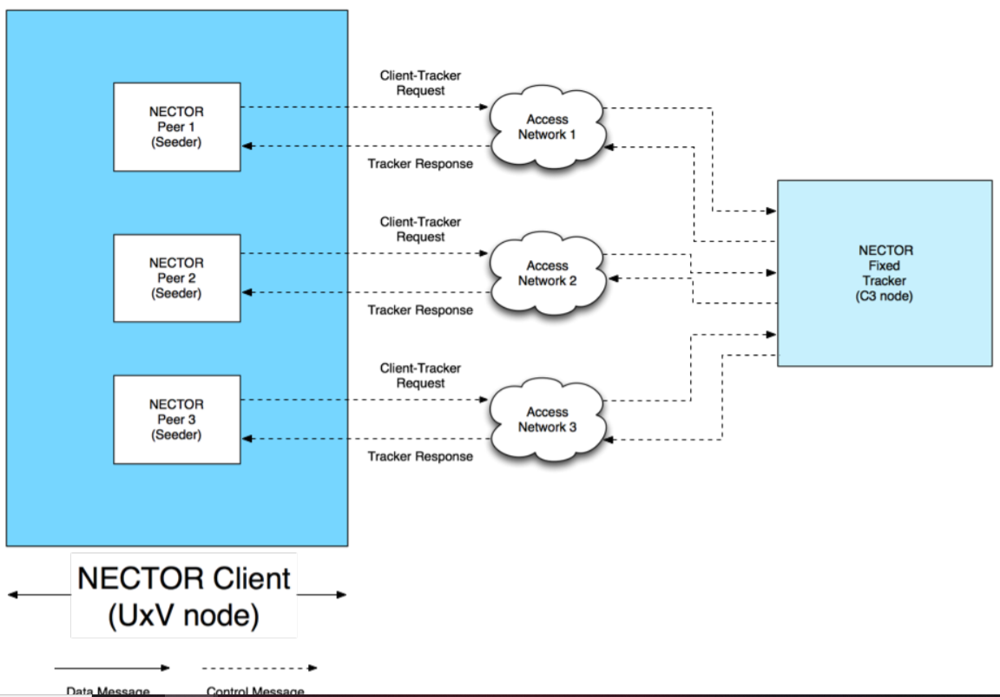

Responsible for sending chunks, communicating with operating
system kernel to know the list of available networks, communicating with NECTOR
Tracker, etc.


NECTOR Client Manager
Client Manager has two functionalities
1 - Communicating with Operating System Kernel: creates a Netlink socket that is used
for communication between the kernel and the application. Whenever the networks
are up or down, the operating system Kernel notifies the NECTOR Client Manager, by seeing which IPs are on.
2 - Creating/Removing NECTOR Peers (Seeders) As soon as the list of available IP
addresses are received from the operating system kernel, the NECTOR Client manager
creates/removes the different instances of the Peers depending on the available IP
addresses.
NECTOR Peer
Created by the NECTOR Manager
Parameters:IP address, UDP port, TCP port number,
NECTOR peer functionalities
1 - Receiving Chunk requests – A NECTOR Peer (Seeder) receives a chunk request from
other NECTOR Peers. The chunk request contains the IP address and the UDP port
number of the downloading Peer in order for Seeder to send the chunks to the
downloading Peer via UDP.
2 - Communication with NECTOR Encoder – The NECTOR Peer (Seeder) asks NECTOR
Encoder for a new chunk via “send new chunks” message. The NECTOR encoder sends
the new chunk to the NECTOR Peer (Seeder). The Seeder sends the new chunk to the
corresponding Leecher.
3 - Sending chunk to the Chunk Sender – Each NECTOR Peer (Seeder) has its
corresponding Chunk Sender. The Chunk is sent to the Chunk Sender for further
processing.
Communication with NECTOR Fixed Tracker (Figure above) – Peers send Client-Tracker
requests to NECTOR Fixed Tracker.
After receiving Client-Tracker request, the tracker sends Tracker-Response message to the
peer.
Tracker Response message fields: interval, number of peers (seeders) with the entire file, number of peers (both seeders and leechers), peers (list with ids, ip address etc of peers)
Client tracker request is sent for two cases: whenever a new peer appears and
Client-Tracker and Tracker-Tracker sequence of events
UVX - NECTOR Client - Code
nector-client.cc
Constructor ( NECTORClient )
Description: has parameters that have to do with NECTOR client identifier, peersSliceSettings,controlSessionTimeout,chunkProgressTimeout,chunkProgressAfterSlicesTimeout
Initiliziation of pointers etc.: encoder, decoder, timeouts, client_manager, setDownloading set to false
Destructor ( NECTORClient )
Description: ?? Iterates through the peers and deletes them??
Add peer ( addPeer )
Parameters: 1)ip address
Function 1: Filter address by checking if its ipv4 or ipv6
Function 2: Add address, check if it exists and also if
there is a client manager
Create the peer, using parameters such as address, adding timeouts (e.g. chunk timeout)
Finally add the peer in the list of peers.
Remove peer ( removePeer )
Parameters: 1)ip address
Function: loop through the peers and if there is a match with the parameter delete.